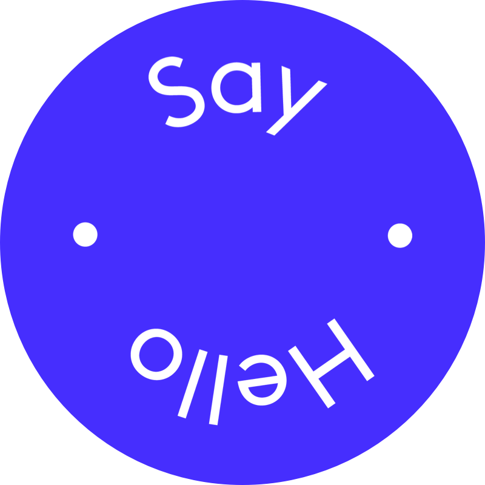

Hey ! Je suis Ayén Bonsoa. Un jeune designer Togolais, diplômé de l'Université de Paris-Nanterre depuis 2019. Je me suis spécialisé dans le webdesign, l’expérience utilisateur et la création d’identités visuelles.
Suites à plusieurs expériences professionnelles, je travaille actuellement pour Sky Switzerland en tant qu’UX & UI Designer. Je travaille sur des projets en parallèles, des collaborations et du freelance via ma propre agence: BOOART .
Curieux et passionné par mon travail, je suis toujours à la recherche de nouveaux défis et de nouvelles découvertes. N’hésitez pas à me contacter. 